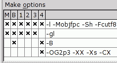

Исходный размер исполняемого файла "persons" - 6.109.004 байт.
Заходим в настройки нашего проекта :
У меня в результате получился размер 1.707.828 байт.
Сразу оговорюсь, что здесь, кроме выкидывания отладочной информации, была выполнена "умная линковка" ( опция "-XX" ) с библиотеками FreePascal ( теми, что представлены файлами с шаблонами имен "lib*.a" )
Но ни сам проект, ни MSEgui-библиотеки не были подготовлены к "умной линковке", а потому попали в выходной файл полностью. То есть экономия вышла за счет удаления отладочной информации и взятия необходимого минимума из библиотек FPC.
Еще большего можно добиться, включив режим "умной компиляции" ( самого проекта и MSEgui-библиотек, чтобы тоже взять из них необходимый минимум ), вписав в последнюю строку опцию "-CX", в результате чего получим группу настроек как на рисунке :

Теперь, пересобрав проект той же командой "Project -> Make 4", получаем размер файла 1.190.068 байт, что очень даже неплохо для сложного DataBase-проекта !
Зайдя в каталог нашего проекта и в каталоги MSEgui-библиотек, мы тоже увидим там файлы "lib*.a".
Имейте ввиду, что :
Дальнейшее уменьшение размера возможно за счет применения программ-упаковщиков типа UPX, у меня, по команде
upx -9 ./persons
получился размер файла 457.398 байт. Имейте ввиду, что данное уменьшение имеет свою цену - распакову файла в момент запуска программы ( с ощутимой паузой, "отъеданием" памяти и т.п. ), поэтому - не используйте как самоцель.
Вообще, а каков минимальный предел размера FPC-программы, со всеми опциями "умной" компиляции и линковки ( ppc386 -mobjfpc -CX -XX {file}.pas; strip -s {file} ) ?
Пустая программа на FPC-2.0.4 :
program test;
begin
end.
дает 115 Кбайт.
Та же программа, но задействующая БД-сервисы :
program test;
uses
db, sqldb;
begin
end.
дает уже 552 Кбайт ( транзитом через увесистую саму-по-себе БД-поддержку включаются также увесистые модули поддержки "varaints" и "widestring" ) .
Дальнейшее усложнение этой программы не дает существенного увеличения размера :
program test;
uses
db, sqldb, pqconnection;
var
conn: tpqconnection;
qry: tsqlquery;
begin
end.
всего-то 555 Кбайт, то есть прирост в 3 КБайт.
Итого мы видим, что вся GUI-поддержка, предоставленная библиотекой MSEgui, заняла 1.1 M - 0.55 M = 550 K. Согласитесь - не очень-то и много.